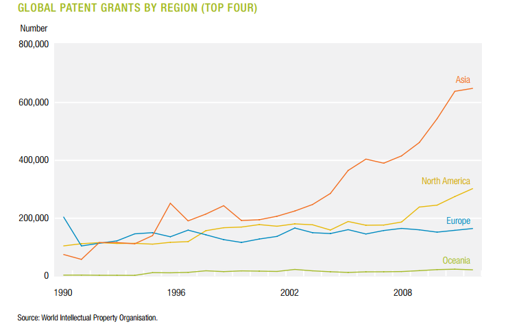

STEM Opportunities
Some economists may still be thinking everything will be fine in the future because more people will train to work in STEM occupations such as computer scientist or electrical engineers, as increasing the use of robots and software will require more talented scientists and engineers to program, design, and maintain them. Some politicians would prefer STEM only universities, but do we aspire for a society Ugly without art - Sure a video game needs programmers but the music, voice acting, story, graphics, character and world design all are substantially improved by artistic knowledge. Books, Films, plays, tv shows, music are all valuable to many of us. We should be able to encourage kids to study their passions and value all higher educating for the benefits it's bring to society in culture, leisure or not just in GDP stats. which discourages people from studying humanities or the arts? Suppose we encouraged all the retail, food prep, transport, clerical workers, trade workers and so on who face disruption, into retraining into STEM;1) Not every person has the ability to learn these difficult skills - almost half of US bachelor’s degree students who entered STEM fields between 2003 and 2009 had left these fields by spring 2009. In engineering, of every one hundred who start, only fifty-five make it to a degree. The subject with the highest drop out rate in the UK is Computer science. In 2011 retail workers had a median age of 38, think about them or the 50 year old unemployed truck/taxi driver or the 26% of fast food workers with children training to become data scientists. Gaining an entirely new skill set Jeremy Rifkin - Rifkin points out that people that lose a low-skilled job often lose the only job they are able to do. Many of people involved for instance in assembly or packaging can barely read and write. They are on the lowest rung of ability and learning.
However, the new job that arises from the machine that ‘steals’ their job is one involving taking care of that machine, which often requires high school computer programming, if not a college degree in computer science. These are in turn qualifications requiring abilities at the higher end of the ladder.
In brief, “it is naive to believe that large numbers of unskilled and skilled blue and white collar workers will be retrained to be physicists, computer scientists, high-level technicians, molecular biologists, business consultants, lawyers, accountants, and the like. isn't easy and is currently very expensive and time consuming.
2) Not every person has the desire or opportunities to study STEM subjects - the current trend is that women don’t want to study STEM subjects, only about a quarter of workers in STEM fields were women in 2011. Just 18% of computer and information sciences bachelor’s degree recipients were women in 2013. African-American and Latino workers also now represent 29 percent of the general workforce population, but just 16 percent of the advanced manufacturing workforce, 15 percent of the computing workforce and 12 percent of the engineering. workforce.
3) There is not enough STEM jobs for STEM graduates, the shortage of stem workers is a complete myth STEM Myth - “If there was really a STEM labor market crisis, you’d be seeing very different behaviors from companies, You wouldn’t see companies cutting their retirement contributions, or hiring new workers and giving them worse benefits packages. Instead you would see signing bonuses, you’d see wage increases.
You would see these companies really training their incumbent workers.” “None of those things are observable,” Hira says. “In fact, they’re operating in the opposite way.” A 2014 study by the National Science Board found that of 19.5 million holders of degrees in STEM, only 5.4 million were working in those fields The Center for Economic Policy and Research, tracing graduates from 2010 through 2014, discovered that 28 percent of engineers and 38 percent of computer scientists were either unemployed or holding jobs that did not need their training.
"A compelling body of research STEM MYTH - Were there to be a genuine shortage at present, there would be evidence of employers raising wage offers to attract the scientists and engineers they want.
But the evidence points in the other direction: Most studies report that real wages in many—but not all—science and engineering occupations have been flat or slow-growing, and unemployment as high or higher than in many comparably-skilled occupations. " is now available, from many leading academic researchers and from respected research organizations, no one has been able to find any evidence indicating current widespread labor market shortages or hiring difficulties in science and engineering occupations that require bachelor's degrees or higher...All have concluded that U.S. higher education produces far more science and engineering graduates annually than there are S&E job openings—the only disagreement is whether it is 100 percent or 200 percent more."
There aren't enough jobs available in STEM for everyone displaced to transition into. It only makes up about
5.5% of the U.S. workforce. STEM vacancies may not be able to grow quickly enough. The BLS projects that in the decade ending in 2022, the number of engineering jobs will have increased only by 8.6 percent, which falls short of the 10.6 percent rise expected for the workforce as a whole. Most striking are forecasts for the chemical, mechanical, and electrical specialties, long mainstays of the profession. Together, the three are estimated to grow by only 4.3 percent, well under half the expected growth in the workforce.
The transitions for the workforce from agriculture, to manufacturing, from manufatoring to service sectors took decades. The world can't go to STEM as a major sector in 20 years, even if it did somehow, far fewer skilled workers are needed to maintain automated industries that are displaced by that automation. Paradoxically pushing more people into STEM jobs could increase the rate of automation, and disruption, even more so.
Gerald Huff - “New high skilled jobs do not make up a high proportion of employment, 90% of US employees work in occupations that existed 100 years ago. Between 1993 and 2013, 23 million net jobs were created but only 1.3 million were in high tech industries and it remained just 6% of the workforce, the majority of job growth the U.S. is retail sales, which currently has about 200,000 openings. In the second spot is fast food workers, followed by cashiers and waiter and waitress jobs.
Global Competition
Even if the US somehow managed to create a large STEM sector then it will still face global competition, just like the manufacturing sector, soon STEM occupations will increasingly suffer from outsourcing. In fact more than 370,000 science and engineering jobs in the United States were lost in 2011, according to the Bureau of Labor Statistics. Electrical and electronic engineering has been heavily outsourced abroad, US employment in 2013 declined to about 300,000, down from about 385,000 in 2002. The same could happen to programming jobs, I think it would be arrogant to say it's never possible because US programmers are “superior” and other countries are are full of “low quality devs” which is what any debate into outsourcing software jobs turns into presently. What is evident is the suggested “superiority” will not be around for much longer, many countries have caught up and doing better educating their population, American high schoolers are dramatically trailing behind comparable countries — especially in Math."There is a global race for STEM skills and other countries are heavily investing and increasing the supply of STEM students, 41% of all degrees awarded by Chinese institutions in 2011 were in a STEM subject, almost twice the proportion of STEM degrees awarded in the UK and three times the rate in the US. China now stands behind only the United States in the number of science and technology journals published annually, and is expected to overtake the US in scientific output within few years, according to a recent study by the Royal Society. By 2020, China expects to have nearly 195 million community college and university graduates — compared with no more than 120 million in the United States. Accenture predicts that Brazil will increase its engineering graduates by 68% by 2015 and will produce more PhD engineers than the US by 2016." A relatively highly educated workforce has been a traditional source of advantage, however, the rapid rise in global education means this historic strength is being eroded, the increasing numbers of highly educated people in the world will inevitably increase the international competition Global Recruitment - As mentioned above in knowledge section with recruitment being automated, a company can post a job, a computer reads it, using its big data and machine learning optimisatiom to find the best matches worldwide, drawing on a global pool for the best workers, matching skills with demand instantly for you, you conduct the interview using VR and you hire them the same day. for the goods and services they produce. Global mobility will also play a significant role in hiring practices as employers look internationally to recruit talented workers.

Remote Collaboration Technology
Salaries for computer science in the US are high, the average starting salary for a computer graduate in the US is $66,800 compared to $33,807 in the UK. What happens when a US company can easily hire 2 UK developer or 5 Chinese US Outsource - A funny story is the US software developer who outsourced his job to China and spent his workdays surfing the web, watching cat videos on YouTube. He reportedly paid just a fifth of his six-figure salary to a company based in Shenyang to do his job. for the price of a US one? Some people can already work without being face to face remotely Remote Working Increase - Between 2001 and 2010 in the UK, for example, the proportion of people working mainly from home rose by 21%, to cover 12.9% of the workforce—or some 3.7m people or from home or thanks to improvements in communication Slack - is a messaging app for teams: everything in one place, instantly searchable. In March 2015, Slack signed a deal with investors to raise up to $160 million in a funding round that values the company at $2.76 billion technologies but most companies still need people to come into the office, this will change in the future, soon staff will be able to work as efficiently and collaboratively as they could if they were physically in the office. This global diffusion of job opportunities will be aided by the rise of virtual networks. Connected Planet - Everyone around the developing world will have fast reliable internet allowing environment for immersive solutions that allow realistic telepresence deliver high definition and realistic representation of distance scenes both from a video and audio perspective (which we refer to as immersive communications), thereby allowing effective telepresence.Hyper connective technology is creating an on demand workforce where companies or people can get global access to independent free agent expertise for a year, month or project. Websites and online talent-sourcing platforms are proliferating. In some cases, registered workers bid for simple work, such as a few hours of writing merchandising copy for websites. Other platforms offer the services of high-skill professionals or entire teams for projects such as software development. Digital disruption will continue redefining what goods and services need to be produced locally and what can be outsourced to other countries, digital disruption Digital disruption - Consider the case of Elance-oDesk, which allows businesses to engage with over nine million freelancers who bid on specific jobs. In this marketplace, which does over a billion in turnover a year, location is no barrier with workers competing to win bids from all over the world.
Businesses like Elance-oDesk eliminate the barriers of distance and significantly expand the supply of workers. This provides great opportunities, for businesses in terms of the quality of the work done and workers by exposing them to a wide variety of potential business opportunities, but it does mean people from all over the world compete on a level playing field. is levelling the playing field in which professionals operate. When a company in the US can easily tap into labour pools in India, China, China Surplus of Highly Skilled - The agricultural revolution was about specialized technology that couldn’t be implemented in other industries. You couldn’t take the farm machinery and have it go flip hamburgers. Information technology is totally different. It’s a broad-based general purpose technology. There isn’t a new place for all these workers to move.
You can imagine lots of new industries—nanotechnology and synthetic biology—but they won’t employ many people. They’ll use lots of technology, rely on big computing centers, and be heavily automated
The reality, however, is that China has struggled to create enough white-collar jobs for its soaring population of college graduates. In mid-2013, the Chinese government revealed that only about half of the country’s current crop of college graduates had been able to find jobs, while more than 20 percent of the previous year’s graduates remained unemployed. According to one analysis, fully 43 percent of Chinese workers already consider themselves to be overeducated for their current positions Brazil, it will increase competition and surplus of people willing to do STEM jobs and lower scarcity of workers with those skills. The FT reports more and more people work for virtual platforms instead of companies; work is auctioned to pools of remote contractors.
Thomas Friedman on the Globalization of Higher Education - "In the past, workers with average skills, doing an average job, could earn an average lifestyle. But, today, average is officially over. Being average just won’t earn you what it used to. It can’t when so many more employers have so much more access to so much more above average cheap foreign labor, cheap robotics, cheap software, cheap automation and cheap genius. Therefore, everyone needs to find their extra — their unique value contribution that makes them stand out in whatever is their field of employment. Average is over."
In 2030 the global labour market will be highly competitive with virtualisation of the workforce, literally. This video of real time graphics rendering combined with a virtual reality headset makes it very likely that virtual immersive environments will be possible in the future. 3D scanning tech which companies are working on such as Google's Project Tango and Faceshift which live captures facial expressions to computer generated characters, will make it possible to add your 3D self into this realistic virtual world and be able to interact and communicate with others and have it feel truly immersive. It’s likely facebook will add their expertise on the social side too with Oculus, making conversations and interactions feel natural. Analysts at PiperJaffray recently said it expects virtual reality to be the megatrend of the next 30 years, with Oculus leading the charge. They compared the market to the mobile phone industry of 15 years ago.
"The future of this technology is going to be “pretty wild, our mission is to give people the power to experience anything, even if you don’t have the ability to travel somewhere, or to be with someone in person, or even if something is physically impossible to build in our analog world,” - Mark Zuckerberg
In the future when you have ubiquitous and even more advanced next generation oculus headsets that FB bought for $2bn, Microsoft’s Hololens or whatever the secretive Magic Leap AR company Google invested $500million into, you know with that much technical expertise and money invested it’s not just gaming that they want to change, it’s real life. Combining improved VR/AR hardware with exponentially increased graphics rendering, collaborative work in the virtual world will be staggeringly immersive. In the future going to work could be as simple as putting on the headset. The technology may reach a point where companies may prefer the virtual over the physical VR Office Advantage - Its much cheaper than a real office, To run a virtual “office” environment you would just need a powerful server and fast internet compared with a physical office building where you need parking space, rent costs, maintenance, repairs, heating, electricity, cleaners, toilet, food/kitchen facilities and equipment( people working from home provide their own computer, chair or table equipment).
If you want to expand a physical office, you need to move everything and will cost more in rent or to buy. With a virtual office its as simple as building a house extension as in The Sims.
It will be more efficient, need to walk to someone's desk for a face to face talk, or arrange a meeting with a client or staff members you can transport instantly to them. for many reasons such as it being cheaper, easier to expand and more efficient. What country is a virtual office located in? Could increase incentive for companies to say the office is located in low taxing countries or not even in any country but in the “cloud”, this may cause problems for governments in collecting tax.
VR has the potential to be more powerful for a business than an office could ever be, even thinking of replicating the “office” model could be completely undervaluing the potential of virtual world technology where any work environment is possible, there are no limits. Many people current office roles could be susceptible to this technology, Employers using VR can overcome remote communication disadvantages meaning they no longer have physical inefficiencies or geographical location limitations and could recruit from anywhere in the world with no H-1B Visa’s or migration hurdles to go through. This could substantially disrupt people living in cities/countries with higher living cost because workers in cheaper living areas(which are now producing many STEM graduates) could undercut them. Especially if tools like Skype instant translation is combined with mouth/audio syncing in the virtual world, then you could communicate with people speaking different languages.
Changes in employment
The 4 above videos show that immersive communication, in any language, with a remote virtual workforce, Virtual workforces - Increasing virtual workforces: Advancements in ICT allow for jobs to be increasingly virtual, carried out remotely. Thus, the main task of company employees is in orchestrating this huge network of freelancers and short-term employees.Freelancers need to continuously invest in maintaining a distinctive and up-todate skill set to compete in the job market individuals that are not willing or able to do this will face being left behind. “Individuals must acquire special skills to stay competitive, as even a high-end skill set is becoming more and more available elsewhere in the world” (Global senior business leader is possible in the near future, the only other barriers to businesses are culture, timezone and the difficulty of the manager orchestrating many remote people, the latter which could be facilitated by an advanced form of Siri or AI one day. Over the next decade more and more people will be collaboratively and flexibly working in the cloud without any fixed location a study by Intuit found. 2020 Report - Smartphones, tablets and other mobile computing devices will become the go-to computing devices for most of the world.
- "Third places" for work will join the traditional office and home. The use of third places — public libraries, co-working facilities and rent-by-the-hour office suites — will continue to grow both in the U5. and abroad, augmenting the already standard list of airports, cars and cafes.
- Enhanced collaboration and video services will transform the new workplace as distributed, virtual teams meet regularly using these new technologies.
- The globalization of talent will continue. Information and communications technologies will better enable globally distributed work. A report by the Economist found as technology develops, however, it seems increasingly likely that the 20th-century construct of people trooping across a city to sit next to each other simply to do their job will come increasingly under question, as more flexible approaches emerge. As such, eight in ten executives agree that the working environment will become “virtual” thanks to more secure mobile technologies and cloud computing. The workforce will become decentralised Remote Workforce - In 2013, 67 per cent of employees worldwide were working in more actively collaborative ways, while 57 per cent reported an increase in their number of coworkers who work from different geographical locations. Jobs and organisations are becoming increasingly flexible in response to the shift towards a 24 hour society.
50 per cent of businesses say that flexible working (including flexible hours and offsite working) is now standard practice. and full of freelance contractors, employees will accessible to companies in any location in a hyper connected world. The company of the future. - "Forget about "outsourcing." In today's hyperconnected world, there is no "in" and no "out." There's only "good, better and best," and if you don't assemble the best team you can from everywhere, your competitor will." - Thomas Friedman we are entering.
Technology is disrupting the very nature of employment. Just like how Uber has turned taxi employees into independent contractors and refuses to treat them as “employees” so it doesn’t have to pay minimum wage, Obamacare health insurance, unemployment insurance, no guarantee of stability, worker’s compensation or pensions, this kind of employment could infect many other occupations, possibly even STEM occupations in the future.
A 2013 report estimates that roughly a third of the US workforce, more than 40 million, consists of temps, part-timers, contractors, contingent workers, freelancers/independent workers and those who are under-employed or work without employer-sponsored health insurance, 401Ks or FLEX accounts” according to a report by the Harvard Business Review. By 2020, 40 percent of the US workforce will consist of freelancers according to a study by Intuit. Across Europe, the number of professional self-employed independent contractors has risen 45 per cent since 2004. Over the last four years, all new jobs the UK added to its workforce have been accounted for entirely Workforce Trend - The self-employed sector has grown by 570,000, to around 4.5 million, a 14.2 per cent increase compared with a 4.3 per cent increase in the number of employees. Of the UK workforce, 14.7 per cent is now self-employed – the highest percentage since records began. by self-employed people.
A Government study in the UK predicts the the way we work will be vastly different Future of Work 2030 - What could the UK’s future of work look like in alternative scenarios?
1. Forced Flexibility (BAU) Greater business flexibility and incremental innovation lead to modest growth in the economy, but this flexibility often results in fewer opportunities and weakened job security for the low-skilled.
2. The Great Divide Despite robust growth driven by strong high-tech industries, a two-tiered, divided society has emerged, reinforcing the divergence in the economic positions of the ‘haves’ and ‘have nots.’
3. Skills Activism Technological innovation drives the automation of white-collar work and brings large-scale job losses and political pressure, leading to an extensive government-led skills programme.
4. Innovation Adaptation In a stagnant economy, improved productivity is achieved through rigorous implementation of ICT solutions. in 2030 and there will be an increase in agency staff or Zero hour contracts Future of Work 2030 - As businesses shrink their workforces to a minimum using flexibly employed external service providers to cover shortfalls, a much smaller group of employees will be able to enjoy long-term contracts. “The idea of a single education, followed by a single career, finishing with a single pension is over” which transfer financial risks to employees. A study by Deloitte found Canadian organizations are reaching out to the “open talent economy.” 47% of Canadian respondents plan to increase their use of contingent, outsourced, contract or part-time workers in the next three to five years. 80% view workforce capability as an important trend—and 53% see it as a long-term priority for their organization."
"Traditional employment will no longer be the norm. replaced by contingent workers such as freelancers and part-time workers. The long-term trend of hiring contingent workers will continue to accelerate with more than 80% percent of large corporations planning to substantially increase their use of a flexible workforce."
The credo of the politician today is: “Why are you not hiring more people here?” The credo of the C.E.O. today is: “You only hire someone — anywhere — if you absolutely have to,” if a smarter machine, robot or computer program is not available. Yes, this is a simplification, but the trend is accurate. The trend is that for more and more jobs, average is over. Thanks to the merger of, and advances in, globalization and the information technology revolution, every boss now has cheaper, easier access to more above-average software, automation, robotics, cheap labor and cheap genius than ever before. So just doing a job in an average way will not return an average lifestyle any longer. - Thomas L. Friedman
Automate automation?
Even more disruption is possible for high-tech jobs like software developer roles. Automation tools such as website design companies like Squarespace which allow non developers to make websites eliminating the need for many web developers, can create superstars which crowd out competitors. The world is increasingly moving towards ‘winner takes all’ Superstar economics - Long ago, Alfred Marshall anticipated the onset of ‘superstar economics’. For much of the 20th century, the presence of superstar economics was limited to familiar examples from the entertainment industry (for example, Katy Perry can reach teenage girls all across the globe) and the world of sport (for example, the jerseys of NBA superstar LeBron James sell untold millions per year in China), with the winners taking most and the rest left to squabble over the crumbs.In the 21st century, the logic of superstar economics is touching every industry, from factory workers to accountants, from lawyers to builders. No industry or occupation is immune. outcomes where those that create something unique or special command increased returns on their efforts while the rest get lower and lower returns. Microsoft Research’s Machine Teaching project is creating tools that would allow anyone to teach a computer how to do machine learning tasks, even if that person has no expertise in data analysis or computer science. Eventually, Simard hopes that a subject matter expert –such as a doctor, an information worker or a chef – could use these machine teaching tools to train models capable of doing tasks on their behalf.
A computer program has been developed that fixes old code faster Self Fixing? - This results in what Amarasinghe describes as “a billion-dollar problem”: companies like Adobe having to devote massive manpower to going back into the code every few years and, by hand, testing out a bunch of different strategies to try to patch it.
But what if there were a computer program that could automatically fix old code so that engineers can focus on more important tasks, such as actually dreaming up new software? Enter Helium, a CSAIL system that revamps and fine-tunes code without ever needing the original source, in a matter of hours or even minutes. than expert engineers, similar tools could one day arrive for programming which could eventually move it to a higher layer of abstraction and be combined with advanced voice recognition and natural language processing tools. DARPA has an upcoming Cyber Grand Challenge which again is testing people versus machines, the challenge is to develop automatic software to protect a computer from an attack with malware. If it is achieved some cyber security occupations could face disruption. DARPA have also funded an $11m project for the next four years with more than a dozen Rice University researchers working on the PLINY Project PLINY - PLINY aims to automatically detect program defects, suggest program repairs, and complete program drafts based on code and specifications mined from vast repositories of existing code.
"If successful, PLINY has the potential to be a transformative technology," said David Melski, VP of Research at GrammaTech. "It has the potential to change the way programming is done, the way programming is taught, and who does programming. It could give the power to express computation to people who don’t currently have it."
Conclusion
The reason this STEM section is quite long is because I see many STEM people arrogantly dismiss the potential for them to be disrupted and claim they were smart for picking a "safe" career and people which didn't its their own fault and victim blaming others saying they should have got a STEM degree. Yet as outlined this is clearly not the case as some high skilled, STEM and even the people who program the machines are vulnerable to disruption. For the "smart" people who may pick a career they think is safe from being automated or outsourced or disrupted, I wonder about your empathy to your parents, siblings, relatives, friends, spouse, children etc? Just because you think your situation is going to be OK for you doesn't mean you can be oblivious to everyone else who could struggle.Even if you do manage to pick a career that appears safe from direct disruption doesn't necessarily mean that it's immune from disruption by external forces. The market system is dependent on customers, and if large numbers of consumers (perhaps even a majority) are without any means to purchase goods and services, the market economy cannot succeed. Your taxes may go up as a consequence, public services be reduced and in the worst case scenario it could cause another recession. The mantra "My jobs safe, I don’t care about anyone else" else is unbelievably short-sighted. Even Billionaire CEO's are worrying about this. Technology will disrupt almost all sectors of the economy, it not only threatens lower skilled jobs but also has the potential to replace higher skilled jobs and open those jobs to more global competition, no business is safe from the effects of the coming disruption.
Read Full Article on Exponential Disruption
Go to top
About
 Website created by
Website created by Nathan Leigh
Website tools created by Mary Lou.
Picture of my cat Kizzy on the right.